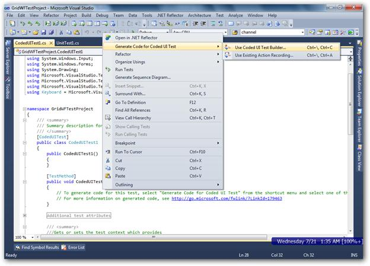
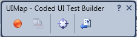
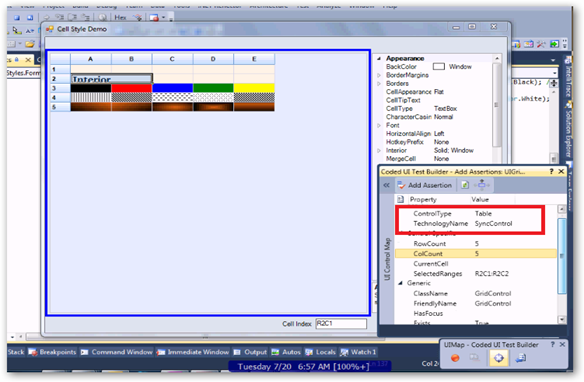
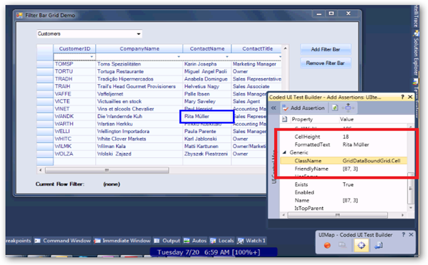
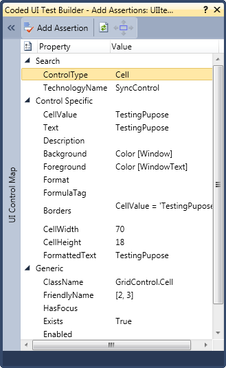

To test the application with generated coded UI Tests:
1. Add a TestMethod called CodedUITestMethod1.
|
[C#] [TestMethod] public void CodedUITestMethod1() { // To generate codes for this test, select "Generate Code for Coded UI Test" from the shortcut menu and select one of the menu items. // For more information on generated code, see: http://go.microsoft.com/fwlink/?LinkId=179463 } |
|
[VB] <TestMethod()> Public Sub CodedUITestMethod1() ' ‘To generate codes for this test, select "Generate Code for Coded UI Test" from the shortcut menu and select one of the menu items. ' For more information on generated code, see: http://go.microsoft.com/fwlink/?LinkId=179463 ' End Sub |
2. Build and run the Grid application that was configured already.
3. Right-click the TestMethod body and then select Generate Code for Coded UI Test -> Use Coded UI Test Builder as shown in the following screenshot:

Figure 492: Opening Coded UI Test Builder
4. Click the Record button to perform actions. In this scenario, add a text Hello World in a cell [x, y].

Figure 493: Coded UI Map

Figure 494: Identifying the Table of the Syncfusion Grid

Figure 495: Identifying a Cell in the Syncfusion Grid
5. Assert the cell value using the cross-hair present in the Coded UI Test builder.
6. Click the cross-hair and hover to the cell. It will display the Assert window as shown in the following screenshot:

Figure 496: Assert Window